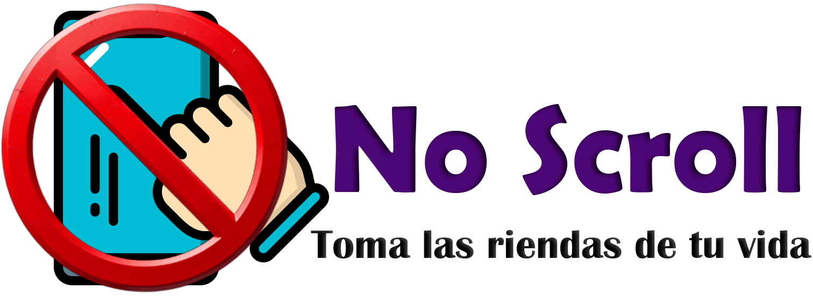
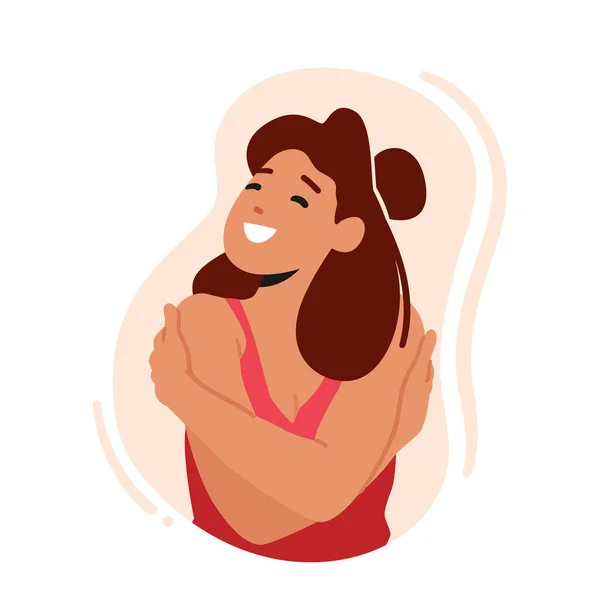
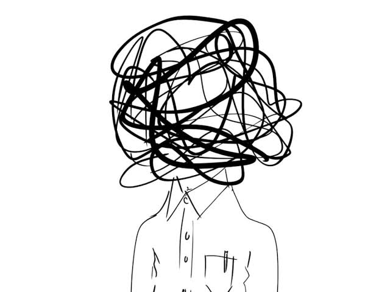
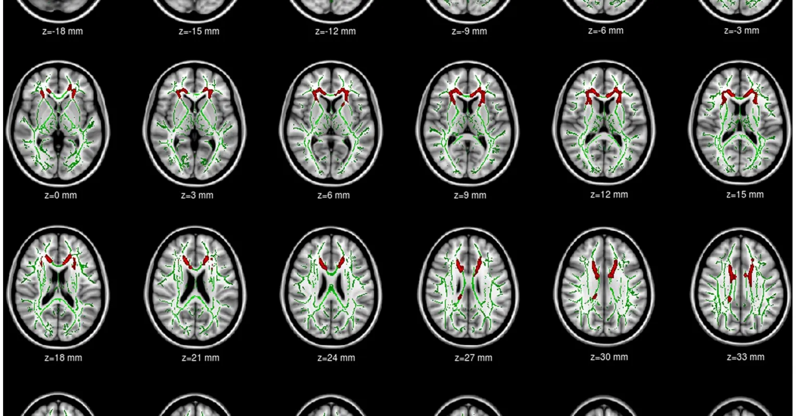
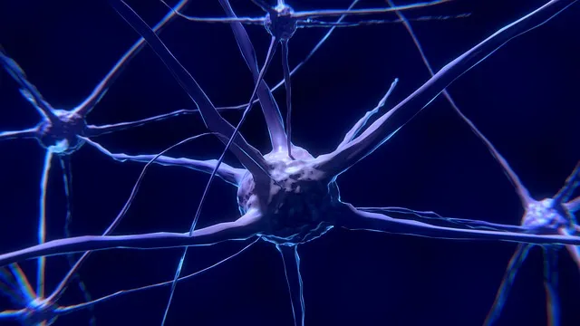
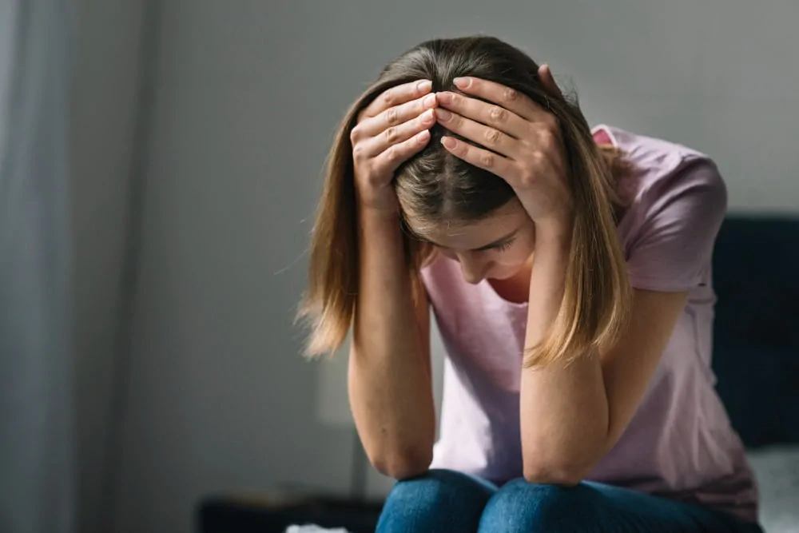

Sesiones de Terapia
Atención profesional para comprender tu relación con las pantallas y desarrollar estrategias saludables para recuperar el control.

Atención profesional para comprender tu relación con las pantallas y desarrollar estrategias saludables para recuperar el control.

Guías y actividades prácticas para reducir gradualmente el tiempo de pantalla y construir hábitos digitales más saludables.

Técnicas sencillas para manejar la ansiedad y evitar recurrir al doomscrolling como forma de escape.
Una comunidad donde puedes compartir tu experiencia, conectar con otras personas y recibir apoyo durante tu proceso.


Aprender másEl uso problemático de pantallas se ha asociado con diferencias en la materia gris de regiones como la corteza prefrontal y cingulada, relacionadas con la atención, el control de impulsos y la regulación emocional, pudiendo afectar la concentración, la toma de decisiones y el comportamiento.
Ver más
Pasaba horas leyendo noticias políticas negativas en Twitter. Cada día terminaba más enojada y ansiosa, y descargaba toda esa frustración con mis amigas. Terminamos peleándonos y alejándonos. Cuando dejé de consumir noticias constantemente, entendí cuánto había cambiado mi forma de relacionarme con ellas y conmigo misma.
Leer másMe levantaba y ponía videos sobre cómo los comunistas y las mujeres estaban destruyendo los videojuegos. Al principio me parecía gracioso, después empecé a creerlo todo. Pasaba horas buscando otra queja, otro enemigo, otra indignación. Sin darme cuenta, dejé de disfrutar los juegos y me convertí en alguien amargado, desconfiado y resentido.
Leer más
Perdí la boda de mi mejor amigo por miedo. Pasaba horas leyendo noticias sobre asesinatos, robos y gente desaparecida, hasta convencerme de que salir era ponerme en peligro. El día de la boda simplemente no pude cruzar la puerta. Él nunca me perdonó. Perdí su amistad por algo que ni siquiera ocurrió.
Leer más